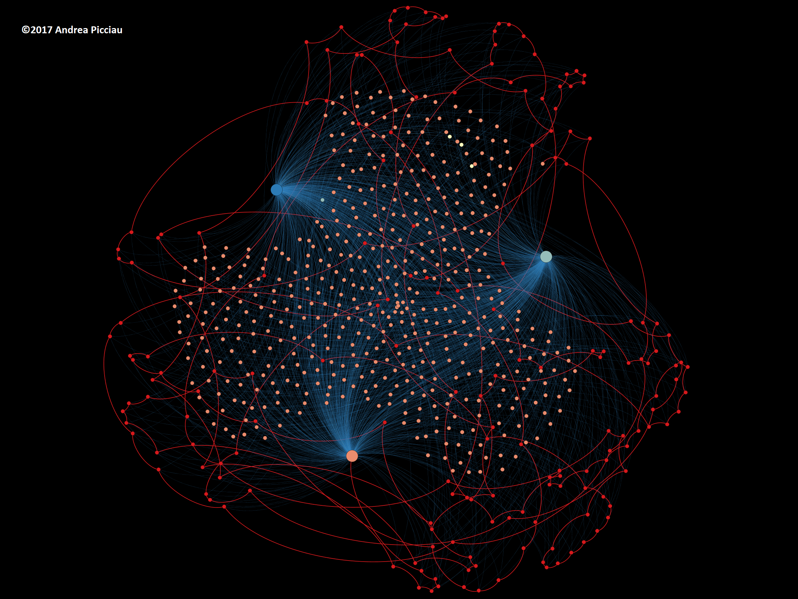

Computing for the cities of the future
The cities of the future will be rich in sensors and computers which
will transform buildings into
smart buildings. Such buildings will be equipped with systems
that can control their emissions and energy consumption automatically,
making cities eco-friendly in ways previously impossible. However many
challenges still exist in building such complex control systems. At
Imperial College
we aim to tackle this through combining mathematics, computer science,
and engineering.
The management of smart buildings can be described with a
mathematical problem. If one can solve the problem quickly the smart
building will be more efficient, as it will be able to adapt faster
to changes in the environment. However, to solve this problem
quickly, we need to understand its
mathematical structure
so that we can transform into a form that is easy for computers to
process. To help us in the development, we use visualisations and the
information contained within them.
In these visualisations, circles represent "switches" or "knobs" that
are turned on in processes that consume energy, while lines represent
connections between these processes. The general shape of the
visualisation, for example the presence of separate "blobs", gives
information on how to partition the solution of the mathematical
problem. Regions represented with bright colours describe processes
and connections that are more useful to save energy.
Control systems of the future will be able to analyse the structure
of the mathematical problem automatically using new computing
technologies that will improve the efficiency of smart buildings.